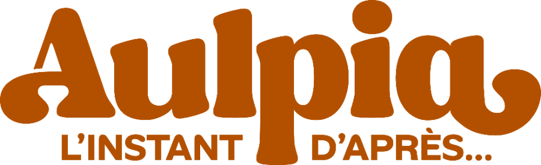
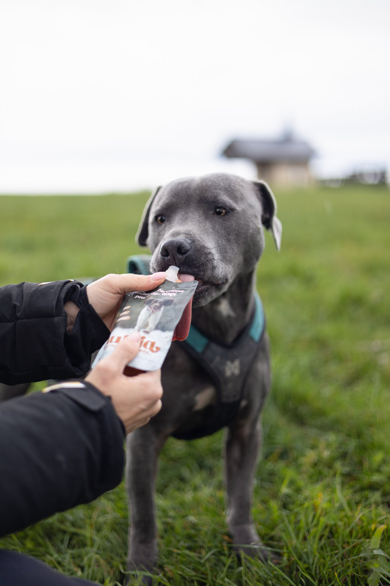

🧳 Le coffre des graisses
- Taille
- Quasi illimité
- Usage
- Carburant principal de l'endurance : 70 à 90 % de l'énergie
- Limite
- Mobilisation lente, inadapté aux pics d'intensité

Pas besoin d'un diplôme pour comprendre : imagine l'énergie de ton chien rangée dans trois coffres, qu'il ouvre dans un ordre précis. Voici ce qui se passe pendant l'effort, et pourquoi Aulpia soutient celui qui préserve le mieux sa santé.
Je préfère t'expliquer ce que je sais plutôt que te promettre ce que je ne peux pas tenir.
À l'effort, ton chien puise dans trois réserves, qu'il ouvre l'une après l'autre selon l'intensité et la durée de la sortie. Les connaître aide à comprendre ce que la gourde fait, et surtout ce qu'elle ne fait pas.
Même si les lipides fournissent l'essentiel de l'énergie sur un effort long, le glycogène reste indispensable pour trois raisons.
Sans glycogène disponible, la vigilance et la coordination chutent, avant même que les muscles ne soient à plat.
Accélérations, montées, sauts : ces pics mobilisent quasi exclusivement le glycogène musculaire, trop rapides pour les lipides.
La vitesse à laquelle le glycogène se reconstitue après la sortie détermine la fraîcheur du chien pour la séance suivante.
C'est donc le niveau de glycogène qui détermine la qualité de l'effort sur la durée, pas la quantité totale d'énergie disponible. C'est précisément ce niveau qu'Aulpia vise à soutenir.

Sur un effort long, ton chien tire 70 à 90 % de son énergie de ses graisses. Ce coffre-là est un puits sans fond : aucun intérêt à le recharger en route.
de la dépense énergétique totale sur un effort d'endurance passe par le coffre des glucides, le plus petit des trois.
C'est ce petit coffre qui se vide en premier. Quand il s'épuise, l'organisme risque d'aller puiser dans le troisième, celui des protéines musculaires.
Aulpia, c'est offrir à ton chien un snack énergétique sain, facile à emporter partout, qui aide son organisme à récupérer. Il ne s'agit pas de le soigner, seulement de préserver sa réserve de glucides, pour limiter le risque d'entamer celle des protéines musculaires.
85 g, c'est le format des gourdes de purée de fruits pour enfants : connu, léger, facile à donner d'une main pendant que l'autre tient la laisse. Dedans, quatre ingrédients, et chacun a un rôle.
La base de la recette : de l'eau et des sucres naturels, pour hydrater et recharger.
Un glucose à assimilation rapide, pour remonter la réserve de glucides.
Surtout pour l'appétence : un goût que le chien apprécie, et un petit apport de glucides en plus.
Une pointe de sodium, qui accompagne l'absorption du glucose.
Une gourde apporte 83 kcal, 21,8 g de glucides et 63,2 g d'eau. Un ravitaillement, pas un repas.
Voir la fiche produit complète →
Toutes les valeurs présentées sont issues de la littérature vétérinaire et de la physiologie de l'exercice canin. Sources disponibles sur demande.
Découvre la gourde, sa composition complète et le dosage selon le gabarit de ton chien.